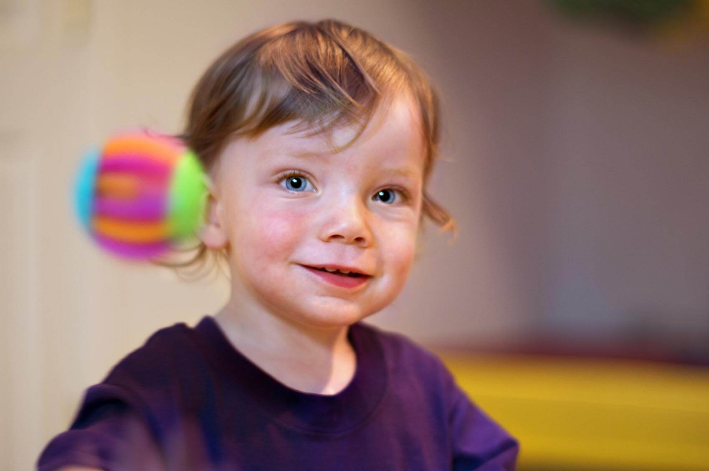

First Steps Physical Therapy
First Steps Physical TherapyFirst Steps Physical Therapy treats children ages 0-18 years of age with a wide range of symptoms and diagnoses.
Specializing In:
- Cerebral Palsy
- Torticollis and plagiocephaly
- Low tone
- Prematurity/high risk infants
- Tongue tie/tethered oral tissue
- Sensory processing disorders
- Autistic Spectrum disorders
- Developmental delay
- Balance and coordination problems
- Spina Bifida
- Muscle disease & other genetic disorders
- Gait issues
- Pediatric orthopedics

Treatment Strategies:
- NDT based treatment programs
- Sensory processing evaluation and treatment
- Craniosacral Therapy
- Kinesiotaping
- Visual-vestibular training
- Nurturing environment with fun, play-based activities
- On-going, long-term collaboration with families.